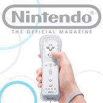

![Amazing Spider-Man Finale Features New [SPOILER] Costume](../../../../../../assets1.ignimgs.com/2018/06/01/untitled-br-1527892808294_small.jpg)
Four podcasts to fill up your daily morning commute.
As many of you may already know, I was featured as a special guest on the most recent episode of MyIGN Nintendo Podcast hosted by our very own paleselan, shmuga9, Troyfullbuster, and fliadaloisio. It was my first time recording something like this, and it was certainly great fun. If you have not yet listened to the episode, you can find the show notes and the download link here.
I personally listen to a lot of podcasts during my free time, usually when I am either on the bus to and from university or at the gym doing my daily workout routine. I especially enjoy listening to people talk about Nintendo, not only because they share the same passions I do, but also because they usually offer some unique insight or new perspective on topics that are otherwise overlooked in traditional news media. Of course, Nintendo being arguably the most unpredictable company in the world, it is always plenty of fun to listen to people rattle on for hours about a particular issue only to be proven wrong a week later. That is why I love listening to podcasts so much.
Below are four Nintendo-centric podcasts that I listen to on a regular basis, in alphabetical order. It is my hope that you will at least give them a try and see how you like them. All of the people involved in the making of these shows work very hard to bring you quality content, and if you are not yet engrossed in the world of podcasts, there is no better way to start than here. Keep in mind that the format of these shows vary from episode to episode, and so my descriptions for each will not be completely accurate depending on when you begin listening to them. Nevertheless, here is a list of my favorite Nintendo podcasts.
GoNintendo Podcast
 Host Site: GoNintendo.com
Host Site: GoNintendo.com
Schedule: Weekly (every Saturday)
Run Time: approximately 75 minutes per episode
Latest Episode: GoNintendo Podcast Webisode 468
GoNintendo Podcast is a podcast recorded and published by GoNintendo.com founder and contributor Kevin Cassidy (better known as “Rawmeat Cowboy”). He is often joined alongside by his girlfriend Danielle Nugent (“Mombrain”), and high school friends Grant Kirby (“Kirby”), Michael Lubinski (“Lube”), Michael Covina (“Nicky Hill”), Andrew Kormondy (“Deux Michaels”), and Dave Bellon (“John the Savage”).
A typical GoNintendo Podcast episode begins with a Bulbapedia reading of the Pokemon whose number corresponds to the episode number of the show. The crew then moves on to that week’s top stories, which are picked out by Rawmeat from GoNintendo.com (where he posts over 100 news stories every day; go check the site out!). After that, each member on the podcast talks about what they have been playing that week, and the podcast ends with reader submitted questions and a music trivia section in which GoNintendo readers submit songs for the podcast members to guess from which game each is from.
The unique thing about GoNintendo Podcast is that it is heavily driven by the community at GoNintendo.com; that is, the listeners have a relatively sizeable influence on how the show turns out. Each top story is read aloud alongside its first comment, and the question and music sections allow users to interact with the show hosts. Additionally, each episode is always recorded live, which means you can talk to the podcast members before, while, and after the show is recording. This is why you will constantly hear Rawmeat say hello to people throughout each episode.
There are a few things that people may not like about GoNintendo podcast. First of all, the audio quality is significantly lower that the others on the list, likely because Rawmeat and his friends simply cannot afford the equipment that most media outlets have at hand. The show is also very informal; expect very many immature fart and poop jokes in each episode, as well as a ton of belching and laughing. Still, perhaps that is what makes this podcast so special; it feels the most organic, and its casual setting is very comforting.
GoNintendo Podcast is for people who…
- Want to catch up on each week’s biggest news stories.
- Want to get involved with a podcast indirectly.
…but not for those who…
- Do not like poop jokes.
Nintendo Voice Chat

Host Site: IGN.com
Schedule: Weekly (every Thursday)
Run Time: approximately 65 minutes per episode
Latest Episode: Nintendo Voice Chat: Digging Through Rare Nintendo Artifacts
Nintendo Voice Chat is part of the IGN family of podcasts and is hosted by IGN associate editor Jose Otero. He is accompanied by other IGN contributors including Peer Schneider and Biran Altano, alongside other occasional guests.
A typical episode of NVC begins with the usual greetings before moving straight into news. While each news story is usually short, the crew will often go on tangents or discuss some news stories at length. The second half of the podcast varies from week to week, but are usually reserved for feature discussion or a special reader questions segment called “The Question Block,” in which the crew must answer each question within a four minute time limit.
What I enjoy most out of NVC are perhaps its personalities. All three members of the main NVC team are very charismatic, and I am always very eager to hear what each of them have to say about each topic. Peer in particular is one of the industry’s oldest veterans, and his experience with Nintendo-related news media began far before IGN was even a thing. That being said, there are times in which the other members of the podcast will spit out misinformed facts that are not entirely true. They say you cannot spell “ignorant” without “IGN,” and while I certainly do not completely agree with that notion, sometimes NVC does have me scratching my head.
I also like how the podcast genuinely feels like a “chat” in that the show flows very naturally as if it were three guys having a nice conversation – and that really is what the show is in actuality. You see, Nintendo Voice Chat is, at its core, a conversation podcast. Because of the variety of people working in different departments at IGN, many of the crew members have conflicting opinions, usually leading to heated arguments and name-calling. Though some may find the podcast to be immature, under the humor and joking-around lie relatively deep conversations about Nintendo and the gaming industry. And yes, despite all the hate IGN gets, these people really do love Nintendo.
Nintendo Voice Chat is for people who…
- Want to get a quick, weekly dose of Nintendo news.
- Enjoy occasional anecdotes on Nintendo history.
…but not for those who…
- Hate IGN.
Official Nintendo Magazine Podcast

Host Site: OfficialNintendoMagazine.co.uk
Schedule: Monthly
Run Time: approximately 65 minutes per episode
Latest Episode: ONM Podcast 63
Official Nintendo Magazine’s editorial team has ben shifting a lot recently, and the two remaining regular podcast members are editor Matthew Castle and staff writer Kate Gray. Until recently, they were also joined by other members of the ONM team, including Chandra Nair, Joe Skrebels, and Gavin Murphy.
A typical episode of ONM podcast begins with a hearty welcome by none other than Charles Martinet, otherwise known as the voice of Mario. The crew then talks about which games they have been playing, which usually coincides with what they have written about in the most recent issue of Official Nintendo Magazine. The show then transitions into reader questions, which can lead to some very strange but entertaining discussion. The episode ends with a competition segment in which the podcast members choose the winner of the previous month’s competition and announce a new competition in which listeners are asked to submit their answers via email and win cool Nintendo swag.
ONM is perhaps best described as NVC with British people. The crew is a very charming bunch, though as a non-British person their voices can be difficult to differentiate (their accents all sound the same!). Of course, being a British podcast means a lot of their jokes and terminology may not be relevant to people elsewhere (for example, an inside joke of theirs involves Wispa Golds, which would make no sense outside the context of England). They also easily lose focus, often going on tangents that are, while entertaining, completely irrelevant to the topic at hand.
Another thing that is worth noting about ONM Podcast is that there is no news segment. This is because the podcast coincides with the release of a monthly print magazine, which obviously cannot keep up with the deluge of news that comes in every day. However, there is more than enough content to keep you entertained throughout the whole hour, and it will keep you wanting to come back for more.
Official Nitnendo Magazine Podcast is for those who…
- Like British things.
- Would rather listen to a quality monthly podcast.
…but not those who…
- Dislike off-topic conversations.
Radio Free Nintendo

Host Site: NintendoWorldReport.com
Schedule: Weekly (every Sunday)
Run Time: approximately 120 minutes per episode
Latest Episode: Episode 393: Tower of Drillaga
Radio Free Nintendo is a member of the NWR family of podcasts hosted by aerospace engineer Dr. Jonathan Metts. He is joined by computer scientist James Jones, old man Jon Lindemann, and former NegativeWorld.com staff writer (and current podcast editor) Guillaume Veillette.
A typical episode of RFN begins with “New Business” in which the podcast members discuss at length about the games they have been playing. Although some of these games may not be available on Nintendo platforms, the discussion usually relates back to Nintendo in some way. After a quick break/advertisement for NintendoWorldReport.com, the crew enters the second half of the podcast in which they engage in either a feature discussion or answer listener mail.
Despite its formal nature, RFN is marked as "explicit" on iTunes because, well, language has no bounds in this podcast. Its tagline is, in fact, “a Nintendo podcast for grown-ups.” Despite this, the discussions on RFN are generally very, very deep and meaningful, and the amount of time and depth given to each topic throughout the podcast is very impressive considering how long the show has been running. The podcast also sounds very clean thanks to the peculiar way the podcast is recorded (the podcast is over Skype, but each person records their audio on their own computers). And as an added bonus, RFN is one of the few podcasts out there that use iTunes' native chapter-marking feature, which allows listeners to skip to sections of the podcast only they are interested in hearing about – and good thing too, because each episode is over two hours long.
Another unique thing about RFN is that, unlike the other podcasts in this list, it is not run by members of the press. The four podcast members, much like the rest of the Nintendo World Report staff, are volunteers and hold day jobs elsewhere. This means each episode features a broad range of perspectives thanks to the varying occupations of each member – and it certainly helps that the people who are talking about Nintendo are actual engineers themselves.
Radio Free Nintendo is for people who…
- Are interested in very in-depth discussion on Nintendo.
- Have no interest in a weekly podcast featuring news.
…but not for those who…
- Do not have time for a two-hour long weekly podcast.
Do you listen to any Nintendo podcasts? What about other podcasts, gaming or othewise? Share your favorite podcasts below!